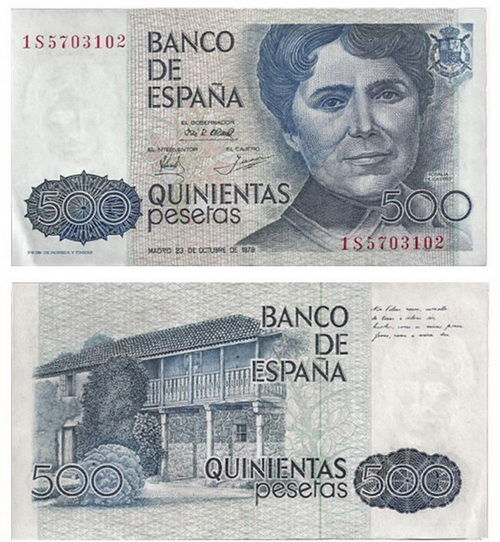

Outros méritos
La Hija del Mar (en lingua castelá, ano 1859):obra en prosa, que ademais foi a primeira das novelas de Rosalía. Nela desenvólvese o tema do temperamento feminino, tratándose dun relato de marcado carácter reivindicativo no que dúas mulleres tentan defender a súa honra no medio dun ambiente predominantemente feminino. Destaca o prólogo da novela, onde a autora, defende os dereitos da muller na vida intelectual: "Porque todavía no les es permitido a las mujeres escribir lo que sienten y lo que saben". Cita predecesoras destacadas tanto do mundo das artes como da política, incluíndo algúns exemplos de mulleres loitadoras, reformadoras e poderosas en diferentes ámbitos da vida pública. Tal como defínea a catedrática Pilar García Negro, Rosalía foi unha "feminista na sombra" que reivindicou o papel das mulleres nun momento moi complicado.
No ano 1979 utilizouse a súa imaxe para os billetes de 500 pesetas. Desta forma, Rosalía de Castro converteuse xunto con Isabel a Católica, no único personaxe feminino retratado no anverso dun billete propiamente español.
No 2015 google rindeulle homenaxe á Rosalía de Castro coincidindo co día do 178 aniversario do seu nacemento, adícandolle o seu doodle.
No 2017 a aerolínea Norwegian elixiu á poetisa galega para bautizar a un dos seus Boeing 737.«La incorporación de la figura de Rosalía de Castro quiere reivindicar su doble papel pionero, en la recuperación del gallego como lengua de cultura y su papel como matriarca de las letras gallegas por un lado, y en la emancipación de la mujer por el otro», afirma Miguel Urresti, responsable de Marketing de Norwegian en España.
O 17 de decembro de 2019, a estrela anteriormente denominada HD149143 foi nomeada oficialmente pola Unión Astronómica Internacional como Rosalíadecastro, a cal conta cun planeta extrasolar que a orbita, chamado Río Sar.
O 2 de abril de 2020, o Boletín Oficial do Estado publicou o cambio de denominación do principal aeroporto da Comunidade Autónoma de Galicia polo de Aeroporto de Santiago-Rosalía de Castro (anteriormente Aeroporto de Santiago de Compostela ou Aeroporto de Lavacolla), dando cumprimento a un acordo unánime do Pleno do Concello da capital galega do ano 2017, ao cumprirse o 180 aniversario do seu nacemento.